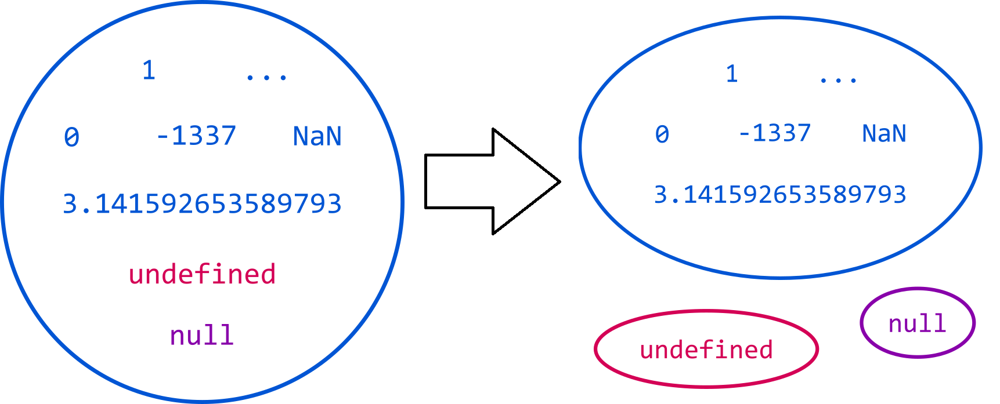

Coolest TypeScript features you may have missed
Par Félix Billon
Qui suis-je ?
- Développeur web orienté front-end chez Dcube.
- Blog dev web : shakedatcode.com
-
 @felix_billon
@felix_billon
Sommaire
- Option strict true
Option strict (TS 2.3)
- Option maître qui active plusieurs options
- Non activée par défaut (sauf si utilisation de tsc --init)
- Possibilité d'overrider une par une les options
- Active :
- --noImplicitAny
- --noImplicitThis
- --alwaysStrict
- --strictNullChecks
- --strictFunctionTypes
- --strictPropertyInitialization
--noImplicitAny
- Any par défaut si :
- TypeScript ne peut inférer le type
- Le type n'est pas précisé
function fn(someArg) { // ERROR : Parameter 'someArg' implicitly has an 'any' type.
//...
}
function fn(someArg: any) {
//...
}
let key = 'secondKey';
let secondValue: string = someObject[key]; // ERROR : Element implicitly has an 'any' type because type 'ISomeObject' has no index signature.
let key: (keyof ISomeObject) = 'secondKey';
let secondValue: string = someObject[key];
--noImplicitThis (TS 2.0)
- Catch les utilisations de this potentiellement dangereuse.
let farms = {
animals: ["chicken", "cow", "rabbit"],
createGroup: function() {
return function() {
return { group: this.animals }; // ERROR : 'this' implicitly has type 'any' because it does not have a type annotation.
}
}
}
let farms = {
animals: ["chicken", "cow", "rabbit"],
createGroup: function() {
return () => (
{ group: this.animals }
)
}
}
function f(this: void) {
// 'this' est inutilisable ici
}
--alwaysStrict (TS 2.1)
- Met "use strict"; au dessus de chaque fichier générer.
- Depuis ES2015 les classes et modules sont toujours en strict mode.
--strictNullChecks (TS 2.0)

let foo: string;
foo = "Test"; // OK
foo = null; // OK
foo = undefined; // OK
let foo: string;
foo = "Test"; // OK
foo = null; // ERROR
foo = undefined; // ERROR
let bar: string | null;
bar = "Test"; // OK
bar = null; // OK
bar = undefined; // ERROR
Invariance/Covariance/Contravariance/Bivariance
class Animals {}
class Dog extends Animals {}
class Bulldog extends Dog {}
// Invariance : accepte ni les sous-classes ni les classes mère
function method(value: Invariant‹Dog›) {...}
method(new Animals()); // ERROR
method(new Dog()); // OK
method(new Bulldog()); // ERROR
// Covariance : accepte les sous-classes
function method(value: Covariant‹Dog›) {...}
method(new Animals()); // ERROR
method(new Dog()); // OK
method(new Bulldog()); // OK
// Contravariance : accepte les classe mère
function method(value: Contravariant‹Dog›) {...}
method(new Animals()); // OK
method(new Dog()); // OK
method(new Bulldog()); // ERROR
// Bivariance : accepte les sous-classes et les classes mères
function method(value: Bivariant‹Dog›) {...}
method(new Animals()); // OK
method(new Dog()); // OK
method(new Bulldog()); // OK
Check des types input/output
class BaseClass {
method(value: Dog): Dog { }
}
class SubClass extends BaseClass {
method(value: Dog): Dog { }
}
Ouput :
class SubClass extends BaseClass {
method(value: Dog): Bulldog { }
}
class SubClass extends BaseClass {
method(value: Dog): Animals { } // DANGER !
}
Input :
class SubClass extends BaseClass {
method(value: Animals): Dog { }
}
class SubClass extends BaseClass {
method(value: Bulldog): Dog { } // DANGER !
}
--strictFunctionTypes (TS 2.6)
- Check les paramètres de fonction de façon contravariant
- Ne s'applique pas aux méthodes, ni aux constructeurs
function trainDog(d: Dog) { };
function cloneAnimal(source: Animal, done: (result: Animal) => void): void { };
let c = new Cat();
cloneAnimal(c, trainDog); // ERROR si --strictFunctionTypes activé
function makeLowerCase(s: string) {
return s.toLowerCase();
}
declare let foo: Promise‹string | number›;
foo.then(makeLowerCase); // ERROR si --strictFunctionTypes activé
--strictPropertyInitialization (TS 2.7)
- Forçe l'initialisation des membres d'une classes.
class C {
foo: number;
bar = "hello";
baz: boolean; // ERROR
constructor() {
this.foo = 42;
}
}
- Utiliser l'opérateur 'definite assignment assertion' pour affirmer votre initilisation
class C {
foo!: number; // ‹-- definite assignment assertion
constructor() {}
onInit() {
this.foo = 10;
}
}